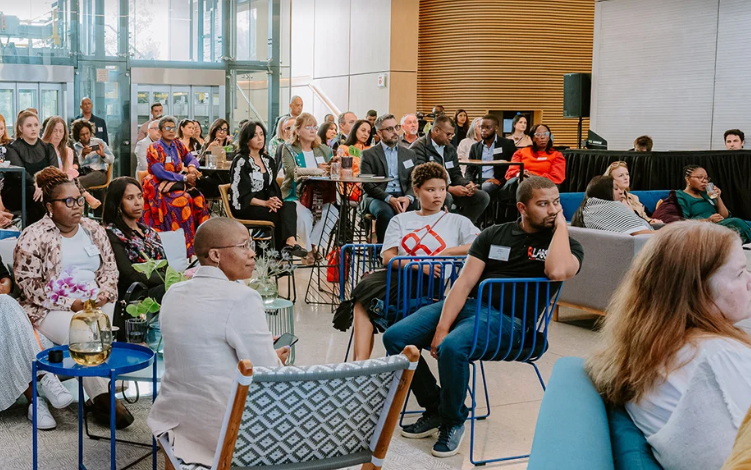

Join us as we continue to make strides in empowering youth through creative, educational, and industry-specific initiatives. Our events connect young talent with leading companies, promoting job creation and skills development.
Date: 22 March 2024 | Location: Johannesburg
This art exhibition, in partnership with Creative Talent Foundation, celebrated the innovative artworks of young South African artists, offering them a platform to showcase their skills and engage with industry leaders.
Date: 17 May 2024 | Location: Cape Town
This awards ceremony recognized the outstanding contributions of companies and individuals who have partnered with us in creating sustainable work opportunities for youth. The evening also featured keynotes from influential leaders in the corporate and non-profit sectors.
Date: 12 August 2024 | Location: Durban
At this event, industry experts, government representatives, and youth organizations gathered to discuss future employment opportunities, technological advancements, and strategies for tackling unemployment among young people in South Africa.
Date: 28 April 2023 | Location: Pretoria
This hands-on workshop, hosted in collaboration with leading tech companies, introduced young individuals to the latest in artificial intelligence, offering training and certification programs to prepare them for the tech-driven future.
Date: 7 June 2023 | Location: Cape Town
This summit brought together key players in the tourism industry, with a focus on how youth can drive innovation and growth in this vital sector. The event included expert panels and networking sessions aimed at building career pathways for young professionals in tourism.
Date: 15 November 2023 | Location: Johannesburg
Recognizing companies that have made significant strides in creating job opportunities for underprivileged youth, this event was held to celebrate social impact through employment and sustainability initiatives. Winners included organizations from various sectors that have excelled in youth development efforts.
Date: 19 February 2023 | Location: Johannesburg
This event, in partnership with leading car manufacturers, provided a unique opportunity for young South Africans to explore career prospects in the automotive industry. The expo featured mentorship programs, skills development workshops, and internship opportunities.